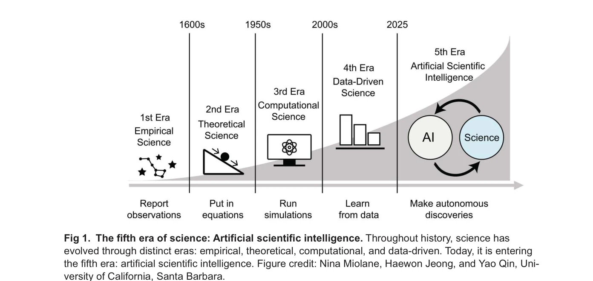

저자: N. Miolane | 날짜: 2025 | DOI: 10.1371/journal.pbio.3003230

Fig 1. The fifth era of science: Artificial scientific intelligence. Throughout history, science has
AlphaFold의 Nobel Prize 수상을 계기로, AI가 과학 발견의 주요 동인이 되는 '제5의 과학 시대'를 논의하며, 이 시대에 인간 과학자의 역할이 AI 지도 및 데이터 큐레이션에 있음을 주장한다.
Fig 1. The fifth era of science: Artificial scientific intelligence. Throughout history, science has
총평: AlphaFold의 Nobel Prize 수상이라는 시의적절한 계기로 과학의 새로운 시대를 선언하면서도, 균형잡힌 비판적 관점으로 AI의 한계를 도메인별로 분석한 설득력 있는 관점 논문이다. 특히 데이터 부족과 잡음 문제를 구체적으로 제시함으로써 무조건적 AI 낙관주의에 대한 필요한 경고를 제공한다.